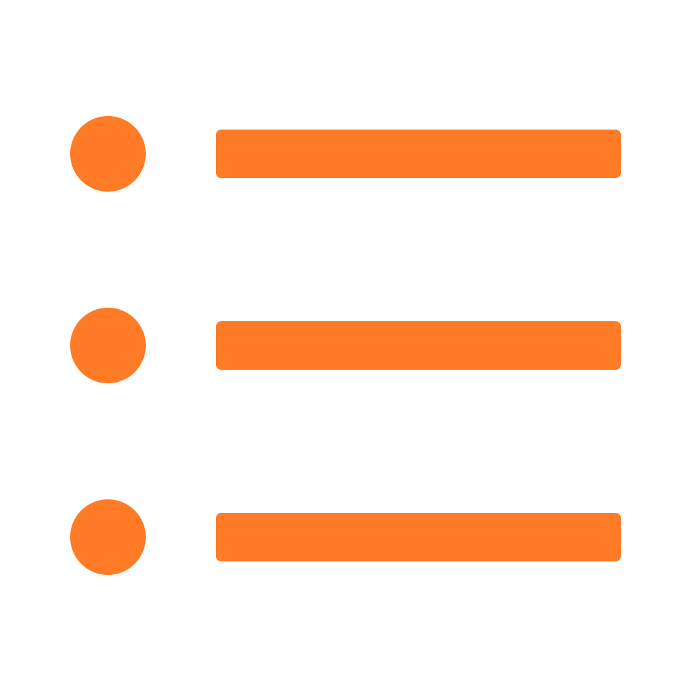

All
Scratch Editor Features
Scratch Website Features
More Settings
Filter:
Recommended
For editor
Beta
For website
Forums
{{ addon.description }}
{{ addon.description }}
{{ addon.warning }}
{{ addon.notice }}
Credit to:
{{ credit.name }}
{{ credit.name }}
Presets